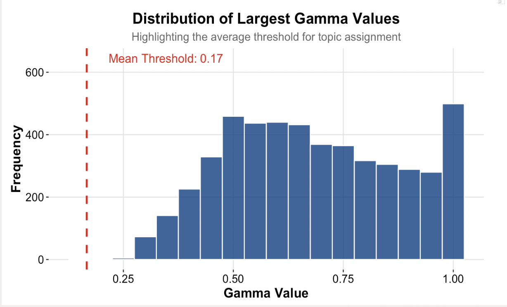
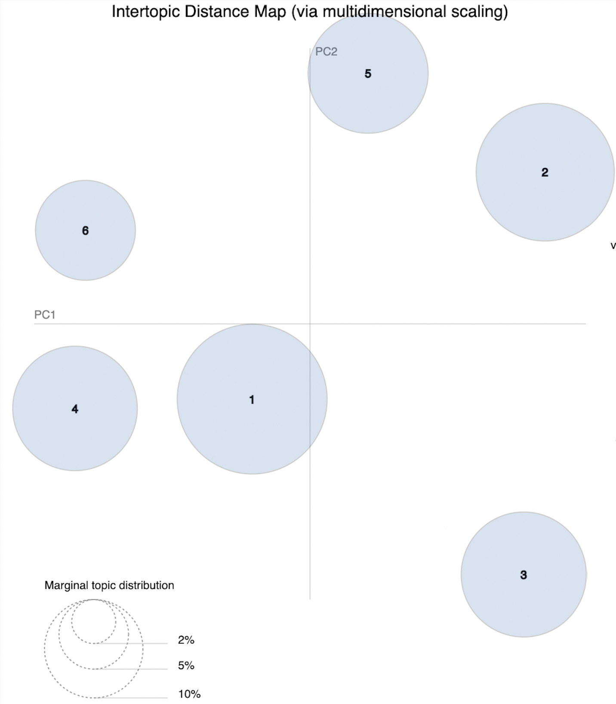
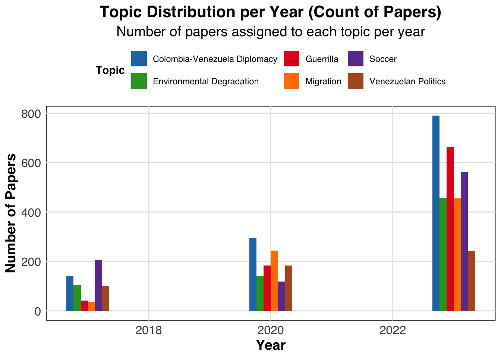
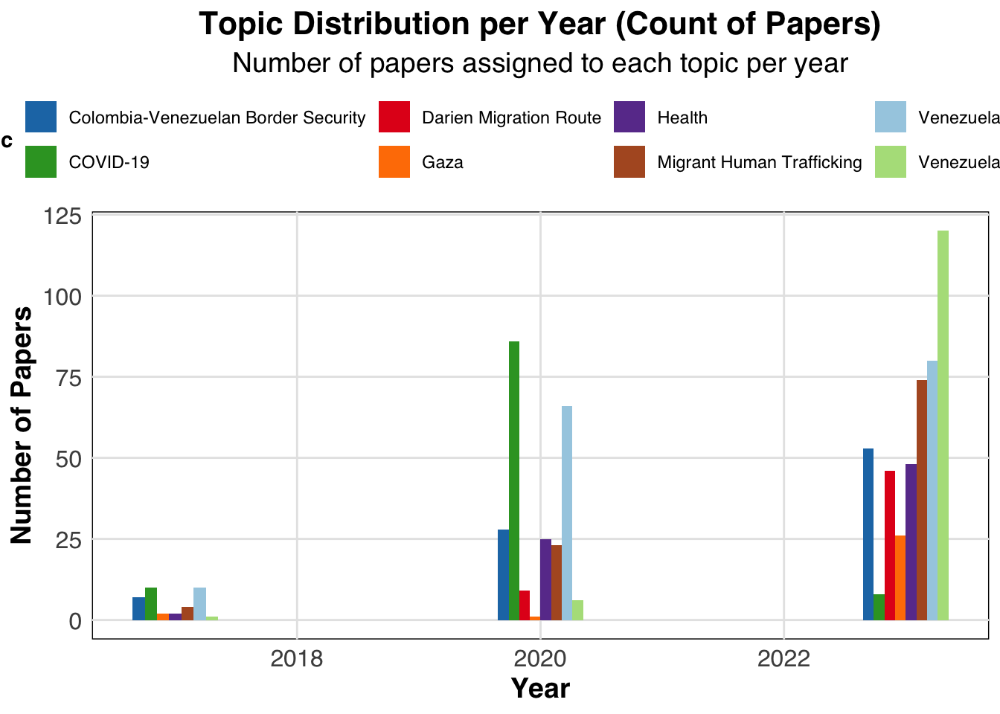

| Topic Name | beta | Term |
|---|---|---|
| Colombia-Venezuela Diplomacy | 0.0174835 | presidente |
| Colombia-Venezuela Diplomacy | 0.0146663 | petro |
| Colombia-Venezuela Diplomacy | 0.0145863 | gobierno |
| Colombia-Venezuela Diplomacy | 0.0102007 | colombia |
| Colombia-Venezuela Diplomacy | 0.0069552 | maduro |
| Environmental Degradation | 0.0127928 | colombia |
| Environmental Degradation | 0.0083346 | países |
| Environmental Degradation | 0.0081055 | país |
| Environmental Degradation | 0.0071971 | ciento |
| Environmental Degradation | 0.0063134 | años |
| Guerrilla | 0.0090287 | eln |
| Guerrilla | 0.0073735 | fiscalía |
| Guerrilla | 0.0073563 | colombia |
| Guerrilla | 0.0070020 | paz |
| Guerrilla | 0.0059495 | caso |
| Migration | 0.0147271 | persona |
| Migration | 0.0126366 | colombia |
| Migration | 0.0120544 | migrantes |
| Migration | 0.0104329 | país |
| Migration | 0.0074064 | venezolanos |
| Soccer | 0.0171755 | colombia |
| Soccer | 0.0077827 | años |
| Soccer | 0.0068918 | tiempo |
| Soccer | 0.0053206 | américa |
| Soccer | 0.0051917 | grupo |
| Venezuelan Politics | 0.0203671 | maduro |
| Venezuelan Politics | 0.0101146 | unidos |
| Venezuelan Politics | 0.0090333 | colombia |
| Venezuelan Politics | 0.0089209 | país |
| Venezuelan Politics | 0.0088790 | venezolano |
Venezuela-Colombia Relations through the News: A Topic Modeling Analysis
Presentation slides
Integrated Report
Introduction
This project is inspired by the intricate historical and ongoing dynamics of Venezuela-Colombia relations, particularly in the context of migration, political tensions, and economic challenges.This relationship has been shaped by significant historical events that have deeply influenced migration patterns, political tensions, and economic ties. To better illustrate this, we draw a broad timeline to highlight some of the main events:

This dynamic history of migration, political conflict, and economic instability inspired our project, which aims to examine how these factors, and more specifically migration, continue to shape the relationship between the two countries.
By focusing on a large corpus of news articles from Colombian newspapers like El Tiempo and El Espectador, the project seeks to computationally analyze how these factors have manifested in media narratives over time. The use of topic modeling, specifically Latent Dirichlet Allocation (LDA), will allow us to identify and track the key themes that have shaped the discourse around Venezuela and Colombia, providing insights into how political events, economic crises, and migration trends have influenced public perception and bilateral relations. Through this analysis, the project aims to uncover the evolving nature of their relationship and explore the role of media in framing these complex dynamics.
Research Question:
What are the main themes discussed in Colombian newspapers about Venezuela-Colombia relations and how do they change in response to significant historical/political events?
Data Source:
The data for this analysis consists 5,061 news articles published by Colombian newspapers El Tiempo and El Espectador. El Tiempo is currently the most widely read newspaper in Colombia and has historically been right-leaning, while El Espectador, the country’s oldest newspaper, is known for its left-leaning stance.
We downloaded these articles from the Nexus Uni database under the keyword “Venezuela”, filtering for all articles published in years 2017, 2020 and 2023.
Methodolody
Data Collection and Pre-processing
- Data Extraction: Articles were extracted from PDF files using
pdftoolsand other relevant libraries to create a text extraction function. - Text Cleaning: Text was cleaned by removing stop words, punctuation, and special characters.
- Tokenization: Text was tokenized into individual words.
- Lemmatization: Words were lemmatized to their root forms using a Spanish lemmatizer.
- TF-IDF: To reduce noise from frequently occurring words that do not convey important information, we applied the TF-IDF statistic, which adjusts word importance by down-weighting common terms and emphasizing less frequent but significant ones. Thus,words with a TF-IDF score below 0.01 were removed from the corpus to improve topic coherence.
Topic Modeling
Document-Term Matrix (DTM): A Document-Term Matrix (DTM) was created to represent the occurrence of words in each document. The DTM is a matrix where rows represent documents and columns represent unique words from the corpus.
Optimal Number of Topics: We used model fitness scores to validate the optimal number of topics for LDA. Specifically, the
FindTopicNumber()function from theldatuningpackage was applied. Using a DTM, this function allows for the input of multiple values for the number of topics (k) and calculates four different model fitness scores simultaneously: Griffiths2004, Deveaud2014, CaoJuan2009, and Arun2010. The use of multiple fitness scores provided a comprehensive approach to determining the optimal number of topics for the LDA model.
Griffiths2004: Aims to identify coherence.
Deveaud2014: Reflects interpretability.
CaoJuan2009: Measures distinctiveness.
Arun2010: Analyzes topic separation.

Based on the fitness score analysis we decided on 6 topic as the optimal parameter our LDA model.
LDA Model: Latent Dirichlet Allocation (LDA) is a probabilistic model that uncovers hidden topics within a corpus by analyzing patterns of word co-occurrence.
Bayesian Inference:
LDA employs Bayesian statistics to infer the hidden structure of the text. It estimates the probability distributions of topics and words based on the observed documents.Generative Model:
LDA assumes that:- Each document is a mixture of multiple topics.
- Each topic is represented as a probability distribution over a set of words.
Using Bayesian inference, LDA works backward from the observed words to:
- Identify the most probable topics for each document.
- Determine the most representative words for each topic.
- Each document is a mixture of multiple topics.
Article Classification:Each newspaper article was categorized based on its topic-document affiliation, determined by Gamma Values derived from the LDA model.
Gamma Value:
Gamma values represent the degree of association between a document and each topic. See the sample distribution of gamma values below:
Figure 3: Gamma Values Distribution and Average Threshold Assignment Criteria:
- Each document was assigned to the topic with the highest gamma value.
- To ensure data quality and relevance, documents with ambiguous affiliations (i.e., gamma values below the average threshold) were excluded from the analysis.
- Each document was assigned to the topic with the highest gamma value.
Topic Interpretation and Refinement: After identifying the latent topics, in consultation with Prof. Busse-Cárdenas, additional analysis was performed to ensure that meaningful themes emerged from the model. The identified topics were interpreted by examining the 20 most frequent words associated with each topic in addition to the top 10 most relevant articles headlines for each topic.
Time-Series Analysis: To observe how the prominence of different topics evolved over time, a time-series analysis was conducted. This involved tracking the load of topics across different time periods, based on the frequency with which words associated with each topic appeared in the articles. Each document was assigned to the topic with the highest probability gamma value and the number and percentage of articles corresponding to each topic were tracked annually. This approach, similar to methods used by Roh and Yang (2019), helped identify shifts in public discourse and main traditional media channels representation over time, especially in relation to key political, economic, and migration-related events.
Inter-Topic Analysis: After identifying a number of topics from the entire corpus, we selected the topic that we identified as migration and replicated the methodology described above to dive into more specific areas withing this theme.
Results and Discussion
Topic Identification and Interpretation:
Top Terms and Themes:
The following table shows the finalized list of topic names and some examples of words that belong to each specific topic.
- Inter-Topic Distance: The relationships between topics were visualized using an inter-topic distance map.

In the previous plot, we established the lambda value to be in a 0.5, as it provides the best balance between word frequency in the overall corpus, and it’s relevance in the selected topic. However, the toggle is useful to explore the two ends of relevance per given topic.
The amount of topics, and the seed used in this LDA model showed no overlap between any of our topics. The topics with the largest percentage of marginal topic distribution are 1 (Colombia-Venezuela Diplomacy) and 2 (Environmental Degradation). Conversely, Topic 6 (Venezuela Politics) has the smallest distribution. In other iterations of LDA’s for our data, we observed that topics overlapped more often when they had a larger marginal topic distributions.
Document-Level Analysis:
Top Representative Documents:
The following table shows the 5 most representative documents for each topic that were identified and analyzed to provide context to our topic naming process.
| Topic Name | max_gamma | Title |
|---|---|---|
| Colombia-Venezuela Diplomacy | 0.9983723 | Petro invitará a más sectores de la oposición venezolana: esto es lo que sabe |
| Colombia-Venezuela Diplomacy | 0.9981617 | ¿Se congelan o no las reformas del Gobierno en la Cámara de Representantes? |
| Colombia-Venezuela Diplomacy | 0.9980557 | Congelar el debate, la estrategia para salvar las reformas en el Congreso |
| Colombia-Venezuela Diplomacy | 0.9979206 | El balance de EE. UU. sobre la Cumbre de Venezuela, organizada por Gustavo Petro |
| Colombia-Venezuela Diplomacy | 0.9973620 | Conferencia sobre Venezuela apunta a un segundo encuentro y pide elecciones pronto |
| Environmental Degradation | 0.9992601 | 'Es fundamental que se esté recuperando la certidumbre con empresarios': mincomercio |
| Environmental Degradation | 0.9992372 | La oferta, clave para ganar la batalla de la descarbonización |
| Environmental Degradation | 0.9990861 | Nuevo estudio hace el balance de las reservas de carbono en la Amazonia |
| Environmental Degradation | 0.9987138 | Latinoamérica enfrenta la mayor reducción de especies y hábitats Esta región ha sufrido una mengua del 94 % |
| Environmental Degradation | 0.9986660 | Gas natural, clave en la transición energética |
| Guerrilla | 0.9991331 | Fiscalía apela fallo que negó preclución a favor de Álvaro Uribe |
| Guerrilla | 0.9991331 | Fiscalía apela fallo que negó preclusión a favor de Álvaro Uribe |
| Guerrilla | 0.9984517 | "Uribe siempre tuvo conocimiento de la operación del Aro": Mancuso en la JEP |
| Guerrilla | 0.9981036 | Julio Gerlein: El zar de la contratación al que Fiscalía imputará tras fuga de Merlano |
| Guerrilla | 0.9980346 | Caso Álvaro Uribe: así avanza audiencia que define si se cierra elproceso en su contra |
| Migration | 0.9990523 | Migrantes venezolanos no tienen protección ante el coronavirus en Norte de Santander |
| Migration | 0.9987105 | Así está la situación en la frontera de EE. UU. tras una semana del fin del Título 42 |
| Migration | 0.9987043 | Accidentes viales, otro flagelo que enfrentan los migrantes, además del Darién |
| Migration | 0.9984426 | Amnistía Internacional pidió a Colombia reconocer como refugiados a venezolanos |
| Migration | 0.9983822 | La Guajira atraviesa otra ola migratoria, esta vez durante la pandemia |
| Soccer | 0.9995505 | Mercado de fichajes, en vivo: movimientos de última hora en plena primera fecha |
| Soccer | 0.9995482 | Mercado de fichajes, en vivo: movimientos de última hora antes de la primera fecha |
| Soccer | 0.9995154 | Mercado de fichajes, en vivo: Santa Fe se sigue moviendo, pero perdió una pieza |
| Soccer | 0.9994794 | Mercado de fichajes, en vivo: baja de Millonarios se va a otro equipo colombiano |
| Soccer | 0.9993927 | Mercado de fichajes de la Liga, en vivo: 'Tití' Rodríguez debutó con gol en Junior |
| Venezuelan Politics | 0.9968177 | Portugal responde a Maduro y dice que fue Venezuela quien atacó a su crucero |
| Venezuelan Politics | 0.9966397 | Agente de la DEA, acusado de filtrar información confidencial sobre Álex Saab |
| Venezuelan Politics | 0.9964870 | ¿Qué se sabe de los negocios de Álex Saab y Álvaro Pulido en Venezuela ? |
| Venezuelan Politics | 0.9964640 | Álex Saab, señalado por corrupción en Pdvsa: este sería el monto desfalcado |
| Venezuelan Politics | 0.9964638 | Fiscalía venezolana pide capturas por operativo militar |
Topic Breakdown:
Colombia-Venezuela Diplomacy: This topic focuses on articles discussing international conference agreements concerning Venezuela, meetings between Colombia’s president, Gustavo Petro, and the opposition group of the current Chavista regime, Plataforma Unitaria Democrática de Venezuela. It also includes coverage of the controversy surrounding a comment made by the former Colombian ambassador to Venezuela, which influenced public opinion on a Colombian health reform.
Notably, all top articles for this topic are from 2023, closely tied to the Cumbre sobre Venezuela en Bogotá (Venezuela Summit) that took place this year. The summit highlighted Petro’s widely reported stance on Venezuela, in which he attributes the country’s challenges to U.S. sanctions (Rojas Silva, 2024).
Environmental Degradation: The most relevant articles in this topic focus on environmental relief strategies for the Amazon region, involving Brazil, Colombia, Ecuador, Peru, and Venezuela, in response to climate change. These strategies include initiatives such as transitioning to natural gas and making carbon markets more appealing to companies. Articles also highlight biodiversity loss caused by deforestation. One notable article raises concerns about Colombian businesses and their relationships with Venezuela, connecting the broader theme of environmental devastation to the role of companies in these processes. These articles are united by their focus on the environmental challenges and the influence of economic actors in addressing or exacerbating these issues.
Guerrilla: The top articles in this topic center on ongoing legal cases involving Colombian politicians. A primary focus is the Caso Uribe, where former Colombian president Álvaro Uribe is accused of alleged ties to right-wing paramilitary and narcotrafficking groups, with key developments occurring in 2023 as the prosecutor’s office formally accused him. The topic connects to Venezuela through Uribe’s lawyer, who is also under investigation and linked to a former Colombian ambassador in Venezuela. Additionally, the topic includes articles about Aida Merlano, a Colombian politician convicted in 2019 for conspiracy, weapons possession, and electoral crimes (BBC News Mundo, 2019). Collectively, these articles connect through their focus on legal proceedings involving politicians with alleged links to guerrilla and criminal groups.
Migration: The most relevant articles in this topic address the challenges faced by Venezuelan immigrants. Some articles highlight their vulnerability during the COVID-19 pandemic and Colombian cities’ responses to the large immigration wave at that time. Others focus on the dangers Venezuelan migrants face crossing one of the most perilous routes on their way to North America, particularly the United States (Roy, D, 2024). Additionally, one article advocates for Colombia to recognize Venezuelan immigrants as refugees to ensure their rights are protected. Another article discusses the 2023 policy changes in the U.S. after the removal of Title 42, which previously allowed border authorities to turn away migrants under COVID-19 health restrictions. The new policy prevents asylum seekers from applying if they did not first seek protection in transit countries or apply online (Long, C, 2023). These articles are connected through their examination of the challenges Venezuelan immigrants face due to shifting policies in Colombia and the United States.
Soccer: The articles in this topic report on soccer matches, players, and regional and international competitions. These articles are connected by their focus on major events and news related to soccer as a sport.
Venezuela Politics: The most relevant articles in this topic cover significant events in Venezuela’s political landscape. One article highlights the conflict between Portugal and Venezuela’s president Maduro, following an attack on a Portuguese cruise ship by the Venezuelan navy. Other top articles focus on Alex Saab, a Venezuelan politician accused of business deals worth an estimated $135 million with the Venezuelan government (Redacción Judicial, 2019). Coverage intensified in 2023 when Saab was released as part of a prisoner exchange with the U.S. These articles are connected through their coverage of key political events in Venezuela, showcasing both internal controversies and international conflicts.
Topic Evolution Over Time:
Topic Distribution:
The following graph shows the distribution of topics across different years. It allows to identify trends and shifts over time.

Inter-Topic Modeling: Migration
Based on the results of our initial LDA model, we chose to focus on the Migration topic to analyze more specifically how Venezuelan migration is discussed in Colombian newspapers.
Sub-topic Identification and Interpretation:
Top Terms and Themes:
The following table shows the finalized list of topic names and some examples of words that belong to each specific sub-topic.
| Topic Name | beta | Term |
|---|---|---|
| COVID-19 | 0.0235548 | coronavirus |
| COVID-19 | 0.0161337 | salud |
| COVID-19 | 0.0140367 | país |
| COVID-19 | 0.0125161 | casos |
| COVID-19 | 0.0118955 | covid |
| Colombia-Venezuelan Border Security | 0.0136321 | venezolanos |
| Colombia-Venezuelan Border Security | 0.0127310 | persona |
| Colombia-Venezuelan Border Security | 0.0109675 | migrantes |
| Colombia-Venezuelan Border Security | 0.0090593 | autoridades |
| Colombia-Venezuelan Border Security | 0.0090385 | ciudad |
| Darien Migration Route | 0.0245733 | migrantes |
| Darien Migration Route | 0.0126453 | persona |
| Darien Migration Route | 0.0113882 | darién |
| Darien Migration Route | 0.0070979 | migración |
| Darien Migration Route | 0.0062296 | dijo |
| Gaza | 0.0206203 | israel |
| Gaza | 0.0172094 | gaza |
| Gaza | 0.0146315 | hamás |
| Gaza | 0.0092145 | mundo |
| Gaza | 0.0090368 | guerra |
| Health | 0.0197845 | bogotá |
| Health | 0.0075544 | aire |
| Health | 0.0070512 | ciudad |
| Health | 0.0064570 | calidad |
| Health | 0.0060649 | colombia |
| Migrant Human Trafficking | 0.0104806 | persona |
| Migrant Human Trafficking | 0.0102540 | mujeres |
| Migrant Human Trafficking | 0.0093836 | derechos |
| Migrant Human Trafficking | 0.0085894 | colombia |
| Migrant Human Trafficking | 0.0068650 | violencia |
| Venezuela Migration Crisis | 0.0273223 | colombia |
| Venezuela Migration Crisis | 0.0169245 | venezolanos |
| Venezuela Migration Crisis | 0.0156044 | migrantes |
| Venezuela Migration Crisis | 0.0129568 | migración |
| Venezuela Migration Crisis | 0.0129412 | país |
| Venezuelan Migrants-US | 0.0203494 | unidos |
| Venezuelan Migrants-US | 0.0141594 | colombia |
| Venezuelan Migrants-US | 0.0123903 | méxico |
| Venezuelan Migrants-US | 0.0123859 | migrantes |
| Venezuelan Migrants-US | 0.0117931 | persona |
Representative Documents:
The following table shows the 5 most representative documents for each topic that were identified and analyzed to provide context to our topic naming process.
| Topic Name | max_gamma | Title |
|---|---|---|
| COVID-19 | 0.9999535 | En vivo: Venezuela suspende vuelos nacionales por coronavirus y Colombia confirma 65 casos |
| COVID-19 | 0.9988569 | Uruguay aclara: "Jamás se pensó en Bogotá como centro para repatriación" |
| COVID-19 | 0.9988479 | Brasil, epicentro latinoamericano de la pandemia, ¿debería preocuparnos? |
| COVID-19 | 0.9982999 | Cuatro departamentos decretan toque de queda por coronavirus La medida se tomó en Quindío, Meta, |
| COVID-19 | 0.9980661 | El plan de respuesta de Colombia para la llegada del coronavirus |
| Colombia-Venezuelan Border Security | 0.9988717 | Cerca de 19 migrantes venezolanos murieron ahogados en un naufragio |
| Colombia-Venezuelan Border Security | 0.9984884 | 19 migrantes venezolanos murieron ahogados en un naufragio |
| Colombia-Venezuelan Border Security | 0.9984509 | Lo que se sabe del naufragio de inmigrantes venezolanos |
| Colombia-Venezuelan Border Security | 0.9984285 | Al menos ocho muertos tras ser arrollados por conductor en Brownsville , Texas |
| Colombia-Venezuelan Border Security | 0.9984285 | Al menos siete muertos tras ser arrollados por conductor en Brownsville , Texas |
| Darien Migration Route | 0.9997891 | La industria migratoria del Darién, un lucrativo negocio |
| Darien Migration Route | 0.9996521 | Así es el cruel tráfico de las mafias con migrantes venezolanos en el Tapón del Darién |
| Darien Migration Route | 0.9995884 | Exclusivo EL TIEMPO: así funciona el negocio de los 'coyotes colombianos' del Darién |
| Darien Migration Route | 0.9994038 | La migración por el tapón de El Darién, un negocio rentable |
| Darien Migration Route | 0.9992514 | El pueblo de Colombia donde algunos se vuelven millonarios con la tragedia de migrantes |
| Gaza | 0.9998036 | El Espectador le explica en qué va la tragedia del conflicto Israel-Hamás |
| Gaza | 0.9996485 | Manifestantes piden en el Capitolio de EE. UU. un alto el fuego entre Israel y Hamás |
| Gaza | 0.9996249 | ???? En vivo: Hezbolá anuncia que está atacando a Israel desde Líbano con misiles |
| Gaza | 0.9995945 | Hamás dijo que "no negociará sobre los cautivos mientras esté bajo fuego israelí" |
| Gaza | 0.9990591 | Israel intensifica bombardeos en Gaza antes de una incursión terrestre |
| Health | 0.9989727 | Se mantiene la alerta por mala calidad del aire, Distrito pide extremar medidas |
| Health | 0.9983997 | Moderada: así amanece la calidad del aire en Bogotá |
| Health | 0.9982999 | Traslado en colegios distritales 2024: ¿cómo solicitar el cambio de institución? |
| Health | 0.9981715 | Convalidar títulos de ciertos médicos de Venezuela , una idea que causa controversia |
| Health | 0.9979283 | Estas son las razones por las que se declaró alerta amarilla en Bogotá |
| Migrant Human Trafficking | 0.9993006 | La lacra del feminicidio, aumentan las cifras de violencia de género en Latinoamérica |
| Migrant Human Trafficking | 0.9992915 | La lacra del feminicidio en Latinoamérica |
| Migrant Human Trafficking | 0.9991872 | El grupo de jóvenes que buscan abolir la explotación sexual en Medellín |
| Migrant Human Trafficking | 0.9989580 | La médica que logró que condenaran a Venezuela por violencia obstétrica |
| Migrant Human Trafficking | 0.9987041 | En el Concejo piden investigar explotación sexual de migrantes por el Tren de Aragua |
| Venezuela Migration Crisis | 0.9992192 | Migración venezolana en el mundo sube; cifras en Colombia pierden transparencia |
| Venezuela Migration Crisis | 0.9989940 | ¿Por qué después de fin de año urge aun más abordar la política migratoria? |
| Venezuela Migration Crisis | 0.9983997 | Japón donó a Colombia 82 equipos de biometría para implementación del ETPV a migrantes |
| Venezuela Migration Crisis | 0.9982164 | Integración fronteriza binacional se reinicia en puente Atanasio Girardot |
| Venezuela Migration Crisis | 0.9980133 | Iniciativas para volver una oportunidad la migración venezolana |
| Venezuelan Migrants-US | 0.9992652 | Conozca cuál será la estrategia de Estados Unidos tras el fin del Título 42 |
| Venezuelan Migrants-US | 0.9988539 | Así serán centros que abrirá EE.UU. para tramitar casos migratorios en Colombia |
| Venezuelan Migrants-US | 0.9986765 | Centros de Movilidad Segura para migrantes no son para colombianos, ¿quiénes aplican? |
| Venezuelan Migrants-US | 0.9984285 | ¿Qué se sabe de los centros de EE. UU. para tramitar casos migratorios en Colombia ? |
| Venezuelan Migrants-US | 0.9984228 | Centros de Estados Unidos en Colombia para migrantes se quedan sin citas |
Topic Breakdown:
COVID-19: The most relevant articles highlight the heightened vulnerability and additional challenges faced by Venezuelan immigrants during the pandemic.
Colombia-Venezuela Border Security: The most relevant articles focus on the deaths of Venezuelan immigrants during migration, particularly near Colombia. Two articles also cover related cases in the United States, expanding the scope of border-related issues.
Darién Migration Route: The most relevant articles address the significant risks Venezuelan immigrants face while crossing the Darién Gap. Additionally, they explore how surrounding Colombian communities are economically benefiting from the needs of these migrants.
Gaza: Although the coverage does not mention Venezuelan immigrants directly, it focuses on the displacement of Gaza’s population due to Israeli attacks. The connection to Venezuelan migration lies in the shared theme of vulnerability during forced movement and displacement.
Health: The most relevant articles focus on how Venezuelan immigrants are impacted within the health sector, particularly in urban areas like Bogotá. Coverage includes the effects of issues such as contaminated air on migrants and the challenges faced by Venezuelan doctors whose work permits were not being accepted.
Migrant Human Trafficking: The most relevant articles highlight cases of human trafficking along the border, as well as violence directed toward women. These articles are connected by the recurring theme of women being the primary victims of such exploitation.
Venezuela Migration Crisis: The most relevant articles discuss the growing number of Venezuelan immigrants and their significant impact on Colombia, emphasizing the scale and consequences of the migration crisis.
Venezuela Migrants-US: The most relevant articles covered how the change in Title 42 has impacted Colombia as the first country of transit for Venezuelan immigrants seeking asylum for the U.S.
Topic Evolution Over Time:
- Topic Distribution:

Conclusion
Our analysis revealed key themes that deepen the understanding of Venezuelan migration in Colombian media. A central finding is the recurring narrative of vulnerability faced by migrants—whether through the risks of crossing the Darien Gap, struggles during the COVID-19 pandemic, or exploitation in human trafficking cases. Policies, such as the U.S. removal of Title 42, further complicated their journey, positioning Colombia as a critical transit country.
Having Gaza as a subtopic was a surprising insight. While unrelated to Venezuelan migration, the coverage of forced displacement in Gaza highlighted a global pattern of vulnerability during movement. This parallel broadens the scope of our findings and situates Venezuelan migration within a larger context.
Locally, Colombian communities seemed to play a mixed role— topics like Venezuelan Migration Crisis described ways in which Colombians would be impacted by the immigrants, while the topic of Darien Migration route revelead that others benefiting economically, especially in border areas. Challenges within institutions, like issues for Venezuelan doctors in the health sector, reveal the structural struggles migrants face in Colombia.
Finally, the sharp increase in coverage in 2023 reflects migration’s growing importance in Colombian media. Topics such as Migration, Diplomacy, and Guerrilla gained prominence, illustrating shifting political and social priorities. By applying LDA iteratively, we uncovered both broad themes and nuanced subtopics, demonstrating the value of focused modeling in revealing the complexities of migration narratives and their global connections. Additionally, we also understood the importance of pairing this style of modelling with a strong method for determining the topic names and capture the nuances of the ways how different articles connect.